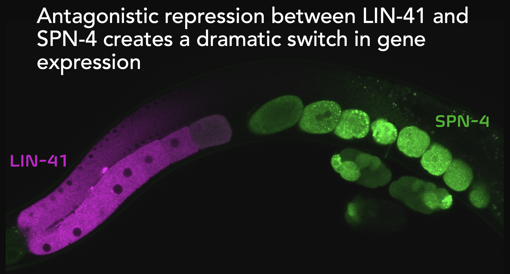
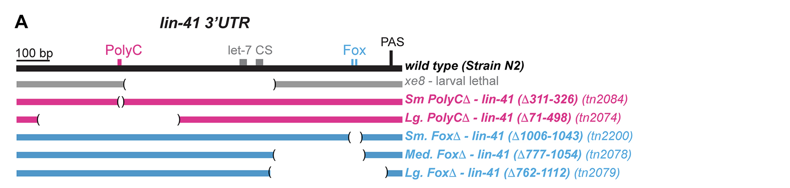

Quantifying smFISH, 2026#
Welcome to the cshl-quantify-smFISH-2026 book.
We will explore FIJI, an open source resource for exploring and quantifying images. We will use RS-FISH, a user-contributed FIJI Plugin that extends FIJI’s basic function to quantify the number of smFISH mRNA spots in an image. We will use FIJI macros to automate the spot detection process across a series of images. Finally, I will explain how command line tools like Big-FISH and wormlib compare.
Images of C. elegans early embryos will be used as input. Tables of mRNA spot counts will be captured as output. Tables can be used to plot mRNA abundance, mRNA co-localization in relation to other markers, or clustering.
Required Software#
Please try to install FIJI on your laptop before this session.
FIJI – please install FIJI from FIJI
Choose from “Latest downloads”
Mac users – if your Mac is running on an M1 – M4 Mac silicon chip, select -> macOS -> arm64. If you are using a MAC with an intel chip, select -> macOS -> x86-64.
If you are unsure, I will walk you through this process
All other software installations will happen in the course
Session Outline (~ 90 minutes)#
Time |
Topic |
Outline |
|---|---|---|
~15 min |
intro to computational projects |
introduction, best practices, and common pitfalls |
~20 min |
intro to FIJI |
Navigating the software, a tour of basic functions |
~30 min |
extending FIJI with plugins |
practicum on mRNA spot detection in FIJI using the RS-FISH plugin |
~15 min |
automating FIJI with macros |
practicum on batch processing images in FIJI using macros |
~10 min |
alternatives to FIJI |
bonus content on big-fish and wormLib |
Learning Objectives#
By the end of this activity, students will be able to:
Learn best practices for conducting a computational analysis project
Use FIJI to open image files and explore their basic features
Load FIJI Plugins
Use RS-FISH quantify perform smFISH mRNA spot detection on C. elegans embryo image files
Use FIJI macros to automate basic FIJI workflows
Have awareness of alternative methods such as fish-quant v2 (Big-FISH) and wormLib
Expected Results#
At the end of this session, students will have hands-on experience working with image files in FIJI. Students will have FIJI and the RS-FISH plugin installed on their local computers. Students will have generated output files that tabulate the number of mRNA spots detected in each input image file by RS-FISH (implemented in FIJI). Key parameters and logfiles will also be saved. Demonstration scripts will be included to show how the output information can be plotted.
Bonus content on fish-quant v2 (Big-FISH) and wormLib will provided to illustrate how the different mRNA spot detection approaches compare in their implementation, complexity, and effectiveness.
Demo Dataset#
As a demonstration of smFISH spot detection, we will use 8x image files. These images were captured in our recent study Spike et al., 2026. In this paper, we explored the lin-41 mRNA, a transcript that promotes oocyte maturation. LIN-41 protein and lin-41 mRNA undergo rapid decay after fertilization.
{kind=link}

To test how lin-41 mRNA decay is regulated, we conducted a 3’UTR deletion analysis on the lin-41 3’UTR. As part of this study, we showed that a key Fox sequence motif in lin-41 mRNA’s 3’UTR’s is required for its decay and is recognized by the RNA Binding Protein SPN-4. Here is the mutational plan:
{kind=link}

Today, we will focus on two strains as a demonstration:
Strain |
Deletion |
Description |
Phenotype |
|---|---|---|---|
DG3913 |
no deletion |
gfp::lin-41::full-3’UTR |
rapid decay, low lin-41 levels |
DG5398 |
medium Fox deletion (tn2078) |
gfp::lin-41::3’UTR-(\(\Delta\)777-1045) |
no decay, high lin-41 levels |
For more information, please see our manuscript:
Spike CA, Parker DM, Tsukamoto T, Torres Mangual N, Tsukamoto EC, Coleman K, Gearhart MD, Greenstein D, Osborne Nishimura E. The SPN-4 Rbfox RNA-binding protein selects maternal mRNAs for CCR4-NOT-dependent clearance in early Caenorhabditis elegans embryos. Development. 2026 Jun 1;153(11):dev205295. doi: 10.1242/dev.205295. Epub 2026 Jun 4. PMID: 42226709.
Activities#
About this site#
This book is built with Jupyter Book and deployed to GitHub Pages.